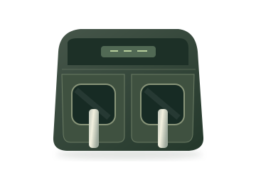

SIDE BY SIDE
Compare the job, not the hype.
Different formats solve different shopping questions. The rows below keep manufacturer statements, listing descriptions and unresolved details separate.

Dual-basket air fryer
A split basket layout is not the same as one uninterrupted cooking space. Check the shape of what you cook.
View on Amazon ↗paid link

26 Qt countertop oven
The manufacturer page says both 24 presets and 25 presets. Confirm the exact model and included accessories before ordering.
View on Amazon ↗paid link

Single-basket air fryer
Chefman lists a 200–400 °F range, while the Amazon title advertises a 450 °F Hi-Fry option. Do not assume the two pages describe identical versions.
View on Amazon ↗paid link

Digital food thermometer
The listing makes accuracy and certification claims. This publication has not independently tested or verified those certifications.
View on Amazon ↗paid link
Wireless food thermometer
Wireless range and heat-safety wording in a title are not a guarantee of performance in your kitchen. Check model-specific limits and instructions.
View on Amazon ↗paid link
Design illustrations, not product photographs. These are the observed Amazon destinations of the supplied links; intended-product confirmation and enrolled Associates reporting checks remain open. Link & intent record. No price, tested ranking or popularity claim is implied. Guide topics are editorial hypotheses, not measured search queries or volume claims.